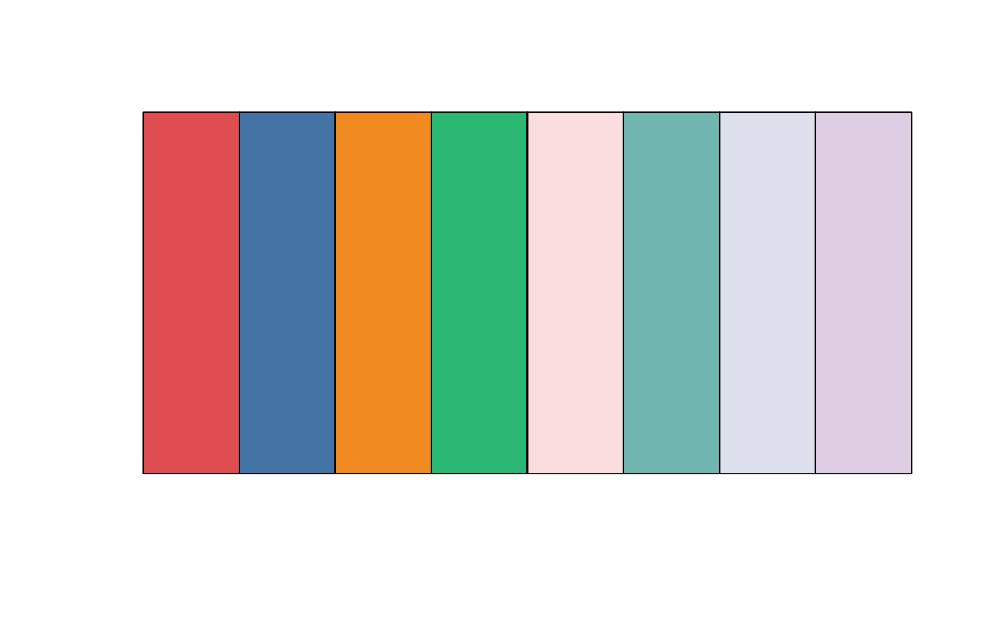
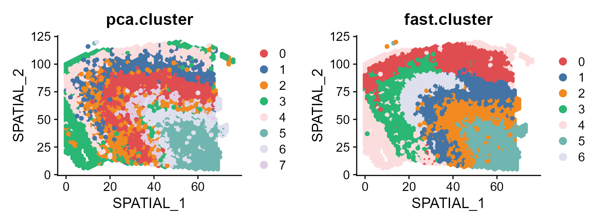
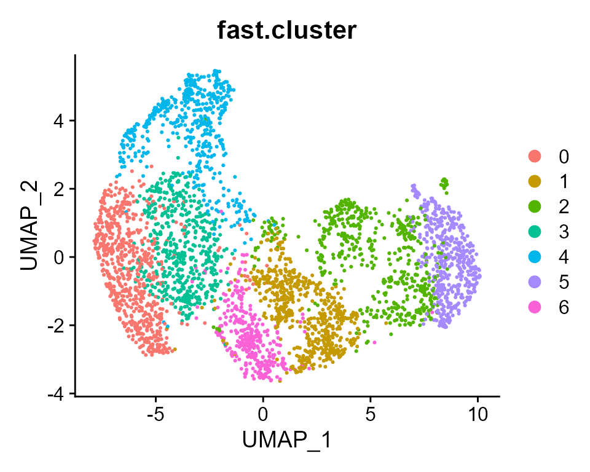

This vignette introduces the FAST workflow for the analysis of single-section rather than multi-secitons data, one humn dorsolateral prefrontal cortex (DLPFC) spatial transcriptomics dataset. In this vignette, the workflow of FAST consists of three steps
We demonstrate the use of FAST to one DLPFC Visium data that are here, which can be downloaded to the current working path by the following command:
githubURL <- "https://github.com/feiyoung/FAST/blob/main/vignettes_data/seulist2_ID9_10.RDS?raw=true"
download.file(githubURL,"seulist2_ID9_10.RDS",mode='wb')Then load to R. Here, we only focus one section.
dlpfc2 <- readRDS("./seulist2_ID9_10.RDS")
dlpfc <- dlpfc2[[1]]The package can be loaded with the command:
library(ProFAST) # load the package of FAST method
#> Loading required package: gtools
#>
#>
library(PRECAST)
#> Loading required package: parallel
#> PRECAST : An efficient data integration method is provided for multiple spatial transcriptomics data with non-cluster-relevant effects such as the complex batch effects. It unifies spatial factor analysis simultaneously with spatial clustering and embedding alignment, requiring only partially shared cell/domain clusters across datasets. More details can be referred to Wei Liu, et al. (2023) <doi:10.1038/s41467-023-35947-w>. Check out our Package website (https://feiyoung.github.io/PRECAST/index.html) for a more complete description of the methods and analyses
library(Seurat)
#> Warning: package 'Seurat' was built under R version 4.1.3
#> Attaching SeuratObject
#> Attaching spFirst, we view the the spatial transcriptomics data with Visium platform. There are ~15000 genes and ~3600 spots.
dlpfc ## a list including three Seurat object with default assay: RNA
#> An object of class Seurat
#> 15027 features across 3639 samples within 1 assay
#> Active assay: RNA (15027 features, 2000 variable features)We observed that the genes are Ensembl IDs. In the following, we will transfer the Ensembl IDs to gene symbols for matching the housekeeping genes in the downstream analysis for removing the unwanted variations.
print(row.names(dlpfc)[1:10])
#> [1] "ENSG00000237491" "ENSG00000230368" "ENSG00000187634" "ENSG00000188976"
#> [5] "ENSG00000187961" "ENSG00000272512" "ENSG00000188290" "ENSG00000187608"
#> [9] "ENSG00000188157" "ENSG00000131591"
count <- dlpfc[['RNA']]@counts
row.names(count) <- unname(transferGeneNames(row.names(count), now_name = "ensembl",
to_name="symbol",
species="Human", Method='eg.db'))
#> 'select()' returned 1:many mapping between keys and columns
print(row.names(count)[1:10])
#> [1] "LINC01409" "FAM41C" "SAMD11" "NOC2L"
#> [5] "KLHL17" "ENSG00000272512" "HES4" "ISG15"
#> [9] "AGRN" "C1ORF159"
seu <- CreateSeuratObject(counts = count, meta.data = dlpfc@meta.data)
#> Warning: Non-unique features (rownames) present in the input matrix, making
#> unique
seu
#> An object of class Seurat
#> 15027 features across 3639 samples within 1 assay
#> Active assay: RNA (15027 features, 0 variable features)We show how to preprocessing before fitting FAST, including log-normalization (if user use the gaussian version of FAST), and select highly variable genes.
row and col, which benefits the identification of spaital coordinates by FAST.
## Check the spatial coordinates: they are named as "row" and "col"!
print(head(seu@meta.data))
#> orig.ident nCount_RNA nFeature_RNA barcode
#> AAACAAGTATCTCCCA-1 SeuratProject 8436 3564 AAACAAGTATCTCCCA-1
#> AAACAATCTACTAGCA-1 SeuratProject 1662 1145 AAACAATCTACTAGCA-1
#> AAACACCAATAACTGC-1 SeuratProject 3758 1949 AAACACCAATAACTGC-1
#> AAACAGAGCGACTCCT-1 SeuratProject 5418 2409 AAACAGAGCGACTCCT-1
#> AAACAGCTTTCAGAAG-1 SeuratProject 4262 2248 AAACAGCTTTCAGAAG-1
#> AAACAGGGTCTATATT-1 SeuratProject 3984 2159 AAACAGGGTCTATATT-1
#> sample_name tissue row col imagerow imagecol Cluster height
#> AAACAAGTATCTCCCA-1 151673 1 50 102 381.0981 440.6391 7 600
#> AAACAATCTACTAGCA-1 151673 1 3 43 126.3276 259.6310 4 600
#> AAACACCAATAACTGC-1 151673 1 59 19 427.7678 183.0783 8 600
#> AAACAGAGCGACTCCT-1 151673 1 14 94 186.8137 417.2367 6 600
#> AAACAGCTTTCAGAAG-1 151673 1 43 9 341.2691 152.7003 3 600
#> AAACAGGGTCTATATT-1 151673 1 47 13 362.9163 164.9415 3 600
#> width sum_umi sum_gene subject position replicate
#> AAACAAGTATCTCCCA-1 600 8458 3586 Br8100 0 1
#> AAACAATCTACTAGCA-1 600 1667 1150 Br8100 0 1
#> AAACACCAATAACTGC-1 600 3769 1960 Br8100 0 1
#> AAACAGAGCGACTCCT-1 600 5433 2424 Br8100 0 1
#> AAACAGCTTTCAGAAG-1 600 4278 2264 Br8100 0 1
#> AAACAGGGTCTATATT-1 600 4004 2178 Br8100 0 1
#> subject_position discard key
#> AAACAAGTATCTCCCA-1 Br8100_pos0 FALSE 151673_AAACAAGTATCTCCCA-1
#> AAACAATCTACTAGCA-1 Br8100_pos0 FALSE 151673_AAACAATCTACTAGCA-1
#> AAACACCAATAACTGC-1 Br8100_pos0 FALSE 151673_AAACACCAATAACTGC-1
#> AAACAGAGCGACTCCT-1 Br8100_pos0 FALSE 151673_AAACAGAGCGACTCCT-1
#> AAACAGCTTTCAGAAG-1 Br8100_pos0 FALSE 151673_AAACAGCTTTCAGAAG-1
#> AAACAGGGTCTATATT-1 Br8100_pos0 FALSE 151673_AAACAGGGTCTATATT-1
#> cell_count SNN_k50_k4 SNN_k50_k5 SNN_k50_k6 SNN_k50_k7
#> AAACAAGTATCTCCCA-1 6 1 1 1 1
#> AAACAATCTACTAGCA-1 16 1 1 1 1
#> AAACACCAATAACTGC-1 5 2 3 4 5
#> AAACAGAGCGACTCCT-1 2 1 1 1 1
#> AAACAGCTTTCAGAAG-1 4 1 1 1 1
#> AAACAGGGTCTATATT-1 6 2 4 5 6
#> SNN_k50_k8 SNN_k50_k9 SNN_k50_k10 SNN_k50_k11 SNN_k50_k12
#> AAACAAGTATCTCCCA-1 1 1 1 4 4
#> AAACAATCTACTAGCA-1 1 1 1 4 4
#> AAACACCAATAACTGC-1 8 9 10 11 10
#> AAACAGAGCGACTCCT-1 1 1 1 2 2
#> AAACAGCTTTCAGAAG-1 1 3 3 3 3
#> AAACAGGGTCTATATT-1 5 6 7 8 12
#> SNN_k50_k13 SNN_k50_k14 SNN_k50_k15 SNN_k50_k16 SNN_k50_k17
#> AAACAAGTATCTCCCA-1 4 4 3 3 3
#> AAACAATCTACTAGCA-1 4 4 3 3 3
#> AAACACCAATAACTGC-1 9 10 11 11 12
#> AAACAGAGCGACTCCT-1 2 2 1 1 1
#> AAACAGCTTTCAGAAG-1 3 3 2 2 2
#> AAACAGGGTCTATATT-1 12 13 14 15 16
#> SNN_k50_k18 SNN_k50_k19 SNN_k50_k20 SNN_k50_k21 SNN_k50_k22
#> AAACAAGTATCTCCCA-1 2 2 2 2 1
#> AAACAATCTACTAGCA-1 2 2 2 2 1
#> AAACACCAATAACTGC-1 13 12 11 11 12
#> AAACAGAGCGACTCCT-1 4 4 4 4 3
#> AAACAGCTTTCAGAAG-1 1 1 1 1 6
#> AAACAGGGTCTATATT-1 17 17 17 16 17
#> SNN_k50_k23 SNN_k50_k24 SNN_k50_k25 SNN_k50_k26 SNN_k50_k27
#> AAACAAGTATCTCCCA-1 1 1 6 5 5
#> AAACAATCTACTAGCA-1 1 1 10 10 10
#> AAACACCAATAACTGC-1 20 20 21 22 21
#> AAACAGAGCGACTCCT-1 3 3 2 2 2
#> AAACAGCTTTCAGAAG-1 6 6 5 4 4
#> AAACAGGGTCTATATT-1 16 16 17 18 17
#> SNN_k50_k28 GraphBased Maynard Martinowich Layer layer_guess
#> AAACAAGTATCTCCCA-1 4 7 2_3 2 NA Layer3
#> AAACAATCTACTAGCA-1 10 4 2_3 3 NA Layer1
#> AAACACCAATAACTGC-1 22 8 WM WM NA WM
#> AAACAGAGCGACTCCT-1 7 6 6 6 NA Layer3
#> AAACAGCTTTCAGAAG-1 3 3 5 5 NA Layer5
#> AAACAGGGTCTATATT-1 18 3 5 5 NA Layer6
#> layer_guess_reordered layer_guess_reordered_short expr_chrM
#> AAACAAGTATCTCCCA-1 Layer3 L3 1407
#> AAACAATCTACTAGCA-1 Layer1 L1 204
#> AAACACCAATAACTGC-1 WM WM 430
#> AAACAGAGCGACTCCT-1 Layer3 L3 1316
#> AAACAGCTTTCAGAAG-1 Layer5 L5 651
#> AAACAGGGTCTATATT-1 Layer6 L6 621
#> expr_chrM_ratio SpatialDE_PCA SpatialDE_pool_PCA HVG_PCA
#> AAACAAGTATCTCCCA-1 0.1663514 3 3 2
#> AAACAATCTACTAGCA-1 0.1223755 2 5 3
#> AAACACCAATAACTGC-1 0.1140886 4 4 7
#> AAACAGAGCGACTCCT-1 0.2422234 3 3 2
#> AAACAGCTTTCAGAAG-1 0.1521739 2 1 1
#> AAACAGGGTCTATATT-1 0.1550949 6 7 8
#> pseudobulk_PCA markers_PCA SpatialDE_UMAP
#> AAACAAGTATCTCCCA-1 2 2 1
#> AAACAATCTACTAGCA-1 7 8 2
#> AAACACCAATAACTGC-1 5 5 5
#> AAACAGAGCGACTCCT-1 3 6 1
#> AAACAGCTTTCAGAAG-1 4 2 1
#> AAACAGGGTCTATATT-1 8 4 1
#> SpatialDE_pool_UMAP HVG_UMAP pseudobulk_UMAP markers_UMAP
#> AAACAAGTATCTCCCA-1 1 3 1 1
#> AAACAATCTACTAGCA-1 2 2 2 1
#> AAACACCAATAACTGC-1 5 6 6 1
#> AAACAGAGCGACTCCT-1 1 3 1 3
#> AAACAGCTTTCAGAAG-1 1 7 3 4
#> AAACAGGGTCTATATT-1 7 1 3 4
#> SpatialDE_PCA_spatial SpatialDE_pool_PCA_spatial
#> AAACAAGTATCTCCCA-1 3 1
#> AAACAATCTACTAGCA-1 7 5
#> AAACACCAATAACTGC-1 5 4
#> AAACAGAGCGACTCCT-1 3 3
#> AAACAGCTTTCAGAAG-1 2 1
#> AAACAGGGTCTATATT-1 6 8
#> HVG_PCA_spatial pseudobulk_PCA_spatial markers_PCA_spatial
#> AAACAAGTATCTCCCA-1 1 3 1
#> AAACAATCTACTAGCA-1 2 2 3
#> AAACACCAATAACTGC-1 4 5 3
#> AAACAGAGCGACTCCT-1 1 2 2
#> AAACAGCTTTCAGAAG-1 2 4 1
#> AAACAGGGTCTATATT-1 7 7 7
#> SpatialDE_UMAP_spatial SpatialDE_pool_UMAP_spatial
#> AAACAAGTATCTCCCA-1 7 1
#> AAACAATCTACTAGCA-1 2 1
#> AAACACCAATAACTGC-1 5 7
#> AAACAGAGCGACTCCT-1 3 4
#> AAACAGCTTTCAGAAG-1 3 3
#> AAACAGGGTCTATATT-1 3 3
#> HVG_UMAP_spatial pseudobulk_UMAP_spatial
#> AAACAAGTATCTCCCA-1 1 2
#> AAACAATCTACTAGCA-1 4 2
#> AAACACCAATAACTGC-1 5 3
#> AAACAGAGCGACTCCT-1 2 1
#> AAACAGCTTTCAGAAG-1 8 4
#> AAACAGGGTCTATATT-1 3 4
#> markers_UMAP_spatial sizeFactor x_gmm r_gmm.V1
#> AAACAAGTATCTCCCA-1 1 2.6257715 1 6.148291e-01
#> AAACAATCTACTAGCA-1 3 0.5269265 4 9.639893e-04
#> AAACACCAATAACTGC-1 2 1.0484921 5 2.420481e-59
#> AAACAGAGCGACTCCT-1 1 1.4784490 1 9.126456e-01
#> AAACAGCTTTCAGAAG-1 4 1.3386770 3 4.862401e-04
#> AAACAGGGTCTATATT-1 4 1.1790057 7 5.331015e-12
#> r_gmm.V2 r_gmm.V3 r_gmm.V4 r_gmm.V5
#> AAACAAGTATCTCCCA-1 2.720022e-24 3.373629e-03 4.191687e-05 1.159537e-49
#> AAACAATCTACTAGCA-1 9.387657e-21 7.717454e-04 9.916840e-01 2.504924e-42
#> AAACACCAATAACTGC-1 3.239627e-12 2.125771e-51 4.454654e-56 1.000000e+00
#> AAACAGAGCGACTCCT-1 1.816712e-24 5.985415e-04 3.034282e-05 1.093182e-49
#> AAACAGCTTTCAGAAG-1 1.298154e-13 8.302244e-01 1.998361e-10 2.101466e-36
#> AAACAGGGTCTATATT-1 1.795491e-03 4.993974e-05 7.770341e-16 1.156953e-19
#> r_gmm.V6 r_gmm.V7 x_icm r_icm.V1 r_icm.V2
#> AAACAAGTATCTCCCA-1 3.817553e-01 1.493637e-08 6 0.216099294 0.029245859
#> AAACAATCTACTAGCA-1 6.580215e-03 5.273170e-08 4 0.002442427 0.002442427
#> AAACACCAATAACTGC-1 7.001587e-58 7.765638e-38 5 0.002442427 0.002442427
#> AAACAGAGCGACTCCT-1 8.672553e-02 1.234249e-08 6 0.002442427 0.002442427
#> AAACAGCTTTCAGAAG-1 5.664366e-03 1.636250e-01 2 0.007702348 0.935915561
#> AAACAGGGTCTATATT-1 1.319611e-11 9.981546e-01 2 0.002442427 0.985345437
#> r_icm.V3 r_icm.V4 r_icm.V5 r_icm.V6 r_icm.V7
#> AAACAAGTATCTCCCA-1 0.029245859 0.079498487 0.029245859 0.587418783 0.029245859
#> AAACAATCTACTAGCA-1 0.002442427 0.985345437 0.002442427 0.002442427 0.002442427
#> AAACACCAATAACTGC-1 0.002442427 0.002442427 0.985345437 0.002442427 0.002442427
#> AAACAGAGCGACTCCT-1 0.002442427 0.002442427 0.002442427 0.985345437 0.002442427
#> AAACAGCTTTCAGAAG-1 0.025572697 0.007702348 0.007702348 0.007702348 0.007702348
#> AAACAGGGTCTATATT-1 0.002442427 0.002442427 0.002442427 0.002442427 0.002442427
#> x_gc r_gc.V1 r_gc.V2 r_gc.V3 r_gc.V4
#> AAACAAGTATCTCCCA-1 6 0.216099294 0.029245859 0.029245859 0.079498487
#> AAACAATCTACTAGCA-1 4 0.002442427 0.002442427 0.002442427 0.985345437
#> AAACACCAATAACTGC-1 5 0.002442427 0.002442427 0.002442427 0.002442427
#> AAACAGAGCGACTCCT-1 6 0.002442427 0.002442427 0.002442427 0.002442427
#> AAACAGCTTTCAGAAG-1 7 0.002442427 0.002442427 0.002442427 0.002442427
#> AAACAGGGTCTATATT-1 7 0.014928224 0.110305483 0.014928224 0.014928224
#> r_gc.V5 r_gc.V6 r_gc.V7
#> AAACAAGTATCTCCCA-1 0.029245859 0.587418783 0.029245859
#> AAACAATCTACTAGCA-1 0.002442427 0.002442427 0.002442427
#> AAACACCAATAACTGC-1 0.985345437 0.002442427 0.002442427
#> AAACAGAGCGACTCCT-1 0.002442427 0.985345437 0.002442427
#> AAACAGCTTTCAGAAG-1 0.002442427 0.002442427 0.985345437
#> AAACAGGGTCTATATT-1 0.014928224 0.014928224 0.815053399
seu <- NormalizeData(seu)
seu <- FindVariableFeatures(seu)
print(seu)
#> An object of class Seurat
#> 15027 features across 3639 samples within 1 assay
#> Active assay: RNA (15027 features, 2000 variable features)
print(seu[['RNA']]@var.features[1:10])
#> [1] "NPY" "PLP1" "IGKC" "HBB" "HBA2" "MBP" "SST" "IGHG3" "CNP"
#> [10] "CRYAB"For function FAST_single, users can specify the number of factors q and the fitted model fit.model. The q sets the number of spatial factors to be extracted, and a lareger one means more information to be extracted but higher computaional cost. The fit.model specifies the version of FAST to be fitted. The Gaussian version (gaussian) models the log-normalized matrix while the Poisson verion (poisson) models the count matrix; default as poisson. (Note: The computational time required to run the analysis on personal PCs is approximately ~0.5 minute on a personal PC.)
Adj_sp <- AddAdj(as.matrix(seu@meta.data[,c("row", "col")]), platform = "Visium")
#> The spatial cooridnates are 2 dimensions
#> Neighbors were identified for 3638 out of 3639 spots.
### set q= 15 here
set.seed(2023)
seu <- FAST_single(seu, Adj_sp=Adj_sp, q= 15, fit.model='poisson')
#> ******Run the Poisson version of FAST...
#> Loading required package: Matrix
#> Finish variable intialization
#> Satrt ICM and E-step!
#> Finish ICM and E-step!
#> iter = 2, loglik= 4721646.936916, dloglik=1.002199
#> Satrt ICM and E-step!
#> Finish ICM and E-step!
#> iter = 3, loglik= 4735495.060408, dloglik=0.002933
#> Satrt ICM and E-step!
#> Finish ICM and E-step!
#> iter = 4, loglik= 4738255.198282, dloglik=0.000583
#> Satrt ICM and E-step!
#> Finish ICM and E-step!
#> iter = 5, loglik= 4739712.043458, dloglik=0.000307
#> Satrt ICM and E-step!
#> Finish ICM and E-step!
#> iter = 6, loglik= 4740608.245939, dloglik=0.000189
#> Satrt ICM and E-step!
#> Finish ICM and E-step!
#> iter = 7, loglik= 4741211.569174, dloglik=0.000127
#> Satrt ICM and E-step!
#> Finish ICM and E-step!
#> iter = 8, loglik= 4741644.069050, dloglik=0.000091
#> Satrt ICM and E-step!
#> Finish ICM and E-step!
#> iter = 9, loglik= 4741969.914462, dloglik=0.000069
#> Satrt ICM and E-step!
#> Finish ICM and E-step!
#> iter = 10, loglik= 4742226.046132, dloglik=0.000054
#> Satrt ICM and E-step!
#> Finish ICM and E-step!
#> iter = 11, loglik= 4742434.476433, dloglik=0.000044
#> Satrt ICM and E-step!
#> Finish ICM and E-step!
#> iter = 12, loglik= 4742608.945866, dloglik=0.000037
#> Satrt ICM and E-step!
#> Finish ICM and E-step!
#> iter = 13, loglik= 4742758.174912, dloglik=0.000031
#> Satrt ICM and E-step!
#> Finish ICM and E-step!
#> iter = 14, loglik= 4742887.788831, dloglik=0.000027
#> Satrt ICM and E-step!
#> Finish ICM and E-step!
#> iter = 15, loglik= 4743001.446850, dloglik=0.000024
#> Satrt ICM and E-step!
#> Finish ICM and E-step!
#> iter = 16, loglik= 4743101.582934, dloglik=0.000021
#> Satrt ICM and E-step!
#> Finish ICM and E-step!
#> iter = 17, loglik= 4743189.893033, dloglik=0.000019
#> Satrt ICM and E-step!
#> Finish ICM and E-step!
#> iter = 18, loglik= 4743267.658362, dloglik=0.000016
#> Satrt ICM and E-step!
#> Finish ICM and E-step!
#> iter = 19, loglik= 4743335.946812, dloglik=0.000014
#> Satrt ICM and E-step!
#> Finish ICM and E-step!
#> iter = 20, loglik= 4743395.724873, dloglik=0.000013
#> Satrt ICM and E-step!
#> Finish ICM and E-step!
#> iter = 21, loglik= 4743447.907537, dloglik=0.000011
#> Satrt ICM and E-step!
#> Finish ICM and E-step!
#> iter = 22, loglik= 4743493.369602, dloglik=0.000010
#> 2024-03-16 19:23:14 : ***** Finish FAST, 0.481 mins elapsed.
seu
#> An object of class Seurat
#> 15027 features across 3639 samples within 1 assay
#> Active assay: RNA (15027 features, 2000 variable features)
#> 1 dimensional reduction calculated: fastRun possion version
Users can also use the gaussian version by the following command:
Adj_sp <- AddAdj(as.matrix(seu@meta.data[,c("row", "col")]), platform = "Visium")
set.seed(2023)
seu <- FAST_single(dlpfc, Adj_sp=Adj_sp, q= 15, fit.model='gaussian')
### Check the results
seuNext, we investigate the performance of dimension reduction by calculating the adjusted McFadden’s pseudo R-square. The manual annotations are regarded as the ground truth in the meta.data of seu.
## Obtain the true labels
y <- seu$layer_guess_reordered
### Evaluate the MacR2
Mac <- get_r2_mcfadden(Embeddings(seu, reduction='fast'), y)
#> # weights: 119 (96 variable)
#> initial value 7026.681548
#> iter 10 value 1409.672035
#> iter 20 value 1278.713363
#> iter 30 value 1180.414145
#> iter 40 value 1116.295883
#> iter 50 value 1092.963545
#> iter 60 value 1065.327354
#> iter 70 value 1015.779215
#> iter 80 value 968.708711
#> iter 90 value 935.972224
#> iter 100 value 913.623163
#> final value 913.623163
#> stopped after 100 iterations
### output them
print(paste0("MacFadden's R-square of FAST is ", round(Mac, 3)))
#> [1] "MacFadden's R-square of FAST is 0.86"Based on the embeddings from FAST, we use Louvain to perform clustering. In this downstream analysis, other methods for clustering can be also used.
seu <- FindNeighbors(seu, reduction = 'fast')
#> Computing nearest neighbor graph
#> Computing SNN
seu <- FindClusters(seu, resolution = 0.4)
#> Modularity Optimizer version 1.3.0 by Ludo Waltman and Nees Jan van Eck
#>
#> Number of nodes: 3639
#> Number of edges: 115298
#>
#> Running Louvain algorithm...
#> Maximum modularity in 10 random starts: 0.8645
#> Number of communities: 7
#> Elapsed time: 0 seconds
seu$fast.cluster <- seu$seurat_clusters
ARI.fast <- mclust::adjustedRandIndex(y, seu$fast.cluster)
print(paste0("ARI of PCA is ", round(ARI.fast, 3)))
#> [1] "ARI of PCA is 0.423"For comparison, we also run PCA to obtain PCA embeddings, and then conduct louvain clustering.
seu <- ScaleData(seu)
#> Centering and scaling data matrix
seu <- RunPCA(seu, npcs=15, verbose=FALSE)
Mac.pca <- get_r2_mcfadden(Embeddings(seu, reduction='pca'), y)
#> # weights: 119 (96 variable)
#> initial value 7026.681548
#> iter 10 value 2638.636241
#> iter 20 value 2513.930759
#> iter 30 value 2329.340597
#> iter 40 value 2069.156942
#> iter 50 value 2012.665652
#> iter 60 value 1975.876382
#> iter 70 value 1910.031745
#> iter 80 value 1844.981378
#> iter 90 value 1818.036414
#> iter 100 value 1793.559494
#> final value 1793.559494
#> stopped after 100 iterations
print(paste0("MacFadden's R-square of PCA is ", round(Mac.pca, 3)))
#> [1] "MacFadden's R-square of PCA is 0.726"
set.seed(1)
seu <- FindNeighbors(seu, reduction = 'pca', graph.name ="pca.graph")
#> Computing nearest neighbor graph
#> Computing SNN
#> Only one graph name supplied, storing nearest-neighbor graph only
seu <- FindClusters(seu, resolution = 0.8,graph.name = 'pca.graph')
#> Modularity Optimizer version 1.3.0 by Ludo Waltman and Nees Jan van Eck
#>
#> Number of nodes: 3639
#> Number of edges: 34702
#>
#> Running Louvain algorithm...
#> Maximum modularity in 10 random starts: 0.7504
#> Number of communities: 11
#> Elapsed time: 0 seconds
#> 3 singletons identified. 8 final clusters.
seu$pca.cluster <- seu$seurat_clusters
ARI.pca <- mclust::adjustedRandIndex(y, seu$pca.cluster)
print(paste0("ARI of PCA is ", round(ARI.pca, 3)))
#> [1] "ARI of PCA is 0.355"First, user can choose a beautiful color schema using chooseColors() in the R package PRECAST.
cols_cluster <- chooseColors(palettes_name = "Nature 10", n_colors = 8, plot_colors = TRUE)
Then, we plot the spatial scatter plot for clusters using the function DimPlot() in the R package Seurat. We observe that the clusters from PCA are more messy while the clusters from FAST are more smoothing in spatial coordinates.
seu <- PRECAST::Add_embed(embed = as.matrix(seu@meta.data[,c("row", "col")]), seu, embed_name = 'Spatial')
seu
#> An object of class Seurat
#> 15027 features across 3639 samples within 1 assay
#> Active assay: RNA (15027 features, 2000 variable features)
#> 3 dimensional reductions calculated: fast, pca, Spatial
p1 <- DimPlot(seu, reduction = 'Spatial', group.by = 'pca.cluster',cols = cols_cluster, pt.size = 1.5)
p2 <- DimPlot(seu, reduction = 'Spatial', group.by = 'fast.cluster',cols = cols_cluster, pt.size = 1.5)
drawFigs(list(p1, p2),layout.dim = c(1,2) )
Next, we visualize the clusters from FAST on the UMAP space, and observe the clusters are well separated in general.
seu <- RunUMAP(seu, reduction = "fast", dims=1:15)
#> Warning: The default method for RunUMAP has changed from calling Python UMAP via reticulate to the R-native UWOT using the cosine metric
#> To use Python UMAP via reticulate, set umap.method to 'umap-learn' and metric to 'correlation'
#> This message will be shown once per session
#> 19:23:34 UMAP embedding parameters a = 0.9922 b = 1.112
#> 19:23:34 Read 3639 rows and found 15 numeric columns
#> 19:23:34 Using Annoy for neighbor search, n_neighbors = 30
#> 19:23:34 Building Annoy index with metric = cosine, n_trees = 50
#> 0% 10 20 30 40 50 60 70 80 90 100%
#> [----|----|----|----|----|----|----|----|----|----|
#> **************************************************|
#> 19:23:35 Writing NN index file to temp file C:\Users\LIUXIA~1\AppData\Local\Temp\RtmpCKRIph\file2fc0741f3d0a
#> 19:23:35 Searching Annoy index using 1 thread, search_k = 3000
#> 19:23:36 Annoy recall = 100%
#> 19:23:37 Commencing smooth kNN distance calibration using 1 thread
#> 19:23:39 Initializing from normalized Laplacian + noise
#> 19:23:39 Commencing optimization for 500 epochs, with 149882 positive edges
#> 19:23:51 Optimization finished
seu
#> An object of class Seurat
#> 15027 features across 3639 samples within 1 assay
#> Active assay: RNA (15027 features, 2000 variable features)
#> 4 dimensional reductions calculated: fast, pca, Spatial, umap
DimPlot(seu, reduction='umap', group.by = "fast.cluster")
Finally, we condut the differential expression (DE) analysis. The function FindAllMarkers() in the Seurat R package is ued to achieve this analysis. And we extract the top five DE genes.
Idents(seu) <- seu$fast.cluster
dat_deg <- FindAllMarkers(seu)
#> Calculating cluster 0
#> Calculating cluster 1
#> Calculating cluster 2
#> Calculating cluster 3
#> Calculating cluster 4
#> Calculating cluster 5
#> Calculating cluster 6
library(dplyr)
#> Warning: package 'dplyr' was built under R version 4.1.3
#>
#> Attaching package: 'dplyr'
#> The following objects are masked from 'package:stats':
#>
#> filter, lag
#> The following objects are masked from 'package:base':
#>
#> intersect, setdiff, setequal, union
n <- 5
dat_deg %>%
group_by(cluster) %>%
top_n(n = n, wt = avg_log2FC) -> top5
top5
#> # A tibble: 35 x 7
#> # Groups: cluster [7]
#> p_val avg_log2FC pct.1 pct.2 p_val_adj cluster gene
#> <dbl> <dbl> <dbl> <dbl> <dbl> <fct> <chr>
#> 1 8.39e-95 0.672 1 0.866 1.26e-90 0 ENC1
#> 2 2.99e-90 0.751 0.928 0.529 4.49e-86 0 HOPX
#> 3 1.57e-67 0.574 0.444 0.13 2.36e-63 0 CARTPT
#> 4 1.68e-64 0.656 0.828 0.438 2.53e-60 0 HPCAL1
#> 5 5.10e-62 0.583 0.46 0.156 7.67e-58 0 SAA1
#> 6 7.59e-94 0.554 1 0.971 1.14e-89 1 SNAP25
#> 7 1.36e-78 0.608 1 0.894 2.05e-74 1 SYT1
#> 8 9.28e-67 0.778 0.862 0.567 1.40e-62 1 DIRAS2
#> 9 1.44e-40 0.578 0.545 0.274 2.16e-36 1 TBR1
#> 10 5.05e-32 0.585 0.871 0.664 7.59e-28 1 SCGB2A2
#> # i 25 more rowsSession Info
sessionInfo()
#> R version 4.1.2 (2021-11-01)
#> Platform: x86_64-w64-mingw32/x64 (64-bit)
#> Running under: Windows 10 x64 (build 22621)
#>
#> Matrix products: default
#>
#> locale:
#> [1] LC_COLLATE=Chinese (Simplified)_China.936
#> [2] LC_CTYPE=Chinese (Simplified)_China.936
#> [3] LC_MONETARY=Chinese (Simplified)_China.936
#> [4] LC_NUMERIC=C
#> [5] LC_TIME=Chinese (Simplified)_China.936
#>
#> attached base packages:
#> [1] parallel stats graphics grDevices utils datasets methods
#> [8] base
#>
#> other attached packages:
#> [1] dplyr_1.0.9 Matrix_1.4-0 sp_1.5-0 SeuratObject_4.1.0
#> [5] Seurat_4.1.1 PRECAST_1.6.3 ProFAST_1.4 gtools_3.9.2.2
#>
#> loaded via a namespace (and not attached):
#> [1] rappdirs_0.3.3 scattermore_0.8
#> [3] ggthemes_4.2.4 GiRaF_1.0.1
#> [5] ragg_1.2.2 tidyr_1.2.0
#> [7] ggplot2_3.4.1 bit64_4.0.5
#> [9] knitr_1.37 irlba_2.3.5
#> [11] DelayedArray_0.20.0 data.table_1.14.2
#> [13] rpart_4.1.16 KEGGREST_1.34.0
#> [15] RCurl_1.98-1.6 generics_0.1.2
#> [17] BiocGenerics_0.40.0 org.Mm.eg.db_3.14.0
#> [19] ScaledMatrix_1.2.0 cowplot_1.1.1
#> [21] RSQLite_2.2.10 RANN_2.6.1
#> [23] future_1.26.1 bit_4.0.4
#> [25] spatstat.data_3.0-0 xml2_1.3.3
#> [27] httpuv_1.6.5 SummarizedExperiment_1.24.0
#> [29] assertthat_0.2.1 viridis_0.6.2
#> [31] xfun_0.29 hms_1.1.1
#> [33] jquerylib_0.1.4 evaluate_0.15
#> [35] promises_1.2.0.1 fansi_1.0.4
#> [37] progress_1.2.2 dbplyr_2.1.1
#> [39] igraph_1.3.5 DBI_1.1.2
#> [41] htmlwidgets_1.5.4 spatstat.geom_2.4-0
#> [43] stats4_4.1.2 purrr_0.3.4
#> [45] ellipsis_0.3.2 RSpectra_0.16-1
#> [47] ggpubr_0.4.0 backports_1.4.1
#> [49] DR.SC_3.4 insight_0.17.0
#> [51] biomaRt_2.50.3 deldir_1.0-6
#> [53] sparseMatrixStats_1.6.0 MatrixGenerics_1.6.0
#> [55] vctrs_0.6.1 SingleCellExperiment_1.16.0
#> [57] Biobase_2.54.0 ROCR_1.0-11
#> [59] abind_1.4-5 cachem_1.0.6
#> [61] withr_2.5.0 progressr_0.10.1
#> [63] sctransform_0.3.3 prettyunits_1.1.1
#> [65] mclust_5.4.10 goftest_1.2-3
#> [67] cluster_2.1.2 lazyeval_0.2.2
#> [69] crayon_1.5.1 labeling_0.4.2
#> [71] pkgconfig_2.0.3 GenomeInfoDb_1.30.1
#> [73] nlme_3.1-155 vipor_0.4.5
#> [75] nnet_7.3-17 rlang_1.1.0
#> [77] globals_0.15.0 lifecycle_1.0.3
#> [79] miniUI_0.1.1.1 filelock_1.0.2
#> [81] BiocFileCache_2.2.1 rsvd_1.0.5
#> [83] rprojroot_2.0.3 polyclip_1.10-0
#> [85] matrixStats_0.62.0 lmtest_0.9-40
#> [87] carData_3.0-5 zoo_1.8-10
#> [89] beeswarm_0.4.0 ggridges_0.5.3
#> [91] png_0.1-7 viridisLite_0.4.1
#> [93] bitops_1.0-7 KernSmooth_2.23-20
#> [95] Biostrings_2.62.0 blob_1.2.2
#> [97] DelayedMatrixStats_1.16.0 stringr_1.4.0
#> [99] parallelly_1.32.0 spatstat.random_2.2-0
#> [101] rstatix_0.7.0 S4Vectors_0.32.3
#> [103] ggsignif_0.6.3 beachmat_2.10.0
#> [105] scales_1.2.1 memoise_2.0.1
#> [107] magrittr_2.0.3 plyr_1.8.7
#> [109] ica_1.0-2 zlibbioc_1.40.0
#> [111] compiler_4.1.2 RColorBrewer_1.1-3
#> [113] fitdistrplus_1.1-8 cli_3.2.0
#> [115] XVector_0.34.0 listenv_0.8.0
#> [117] patchwork_1.1.1 pbapply_1.5-0
#> [119] MASS_7.3-55 mgcv_1.8-39
#> [121] tidyselect_1.1.2 stringi_1.7.6
#> [123] textshaping_0.3.6 highr_0.9
#> [125] yaml_2.3.6 BiocSingular_1.10.0
#> [127] ggrepel_0.9.1 grid_4.1.2
#> [129] sass_0.4.1 tools_4.1.2
#> [131] future.apply_1.9.0 rstudioapi_0.13
#> [133] gridExtra_2.3 farver_2.1.1
#> [135] Rtsne_0.16 digest_0.6.29
#> [137] rgeos_0.5-9 shiny_1.7.1
#> [139] Rcpp_1.0.10 GenomicRanges_1.46.1
#> [141] car_3.0-12 broom_0.7.12
#> [143] scuttle_1.4.0 performance_0.8.0
#> [145] later_1.3.0 harmony_0.1.0
#> [147] RcppAnnoy_0.0.19 org.Hs.eg.db_3.14.0
#> [149] httr_1.4.3 AnnotationDbi_1.56.2
#> [151] colorspace_2.1-0 XML_3.99-0.9
#> [153] fs_1.5.2 tensor_1.5
#> [155] reticulate_1.25 IRanges_2.28.0
#> [157] splines_4.1.2 uwot_0.1.11
#> [159] spatstat.utils_3.0-1 pkgdown_2.0.6
#> [161] scater_1.25.1 plotly_4.10.0
#> [163] systemfonts_1.0.4 xtable_1.8-4
#> [165] jsonlite_1.8.0 R6_2.5.1
#> [167] pillar_1.9.0 htmltools_0.5.2
#> [169] mime_0.12 tictoc_1.2
#> [171] glue_1.6.2 fastmap_1.1.0
#> [173] BiocParallel_1.28.3 BiocNeighbors_1.12.0
#> [175] codetools_0.2-18 furrr_0.3.1
#> [177] utf8_1.2.3 lattice_0.20-45
#> [179] bslib_0.3.1 spatstat.sparse_2.1-1
#> [181] tibble_3.2.1 curl_4.3.2
#> [183] ggbeeswarm_0.6.0 leiden_0.4.2
#> [185] limma_3.50.1 survival_3.2-13
#> [187] CompQuadForm_1.4.3 rmarkdown_2.11
#> [189] desc_1.4.0 munsell_0.5.0
#> [191] GenomeInfoDbData_1.2.7 reshape2_1.4.4
#> [193] gtable_0.3.3 spatstat.core_2.4-4